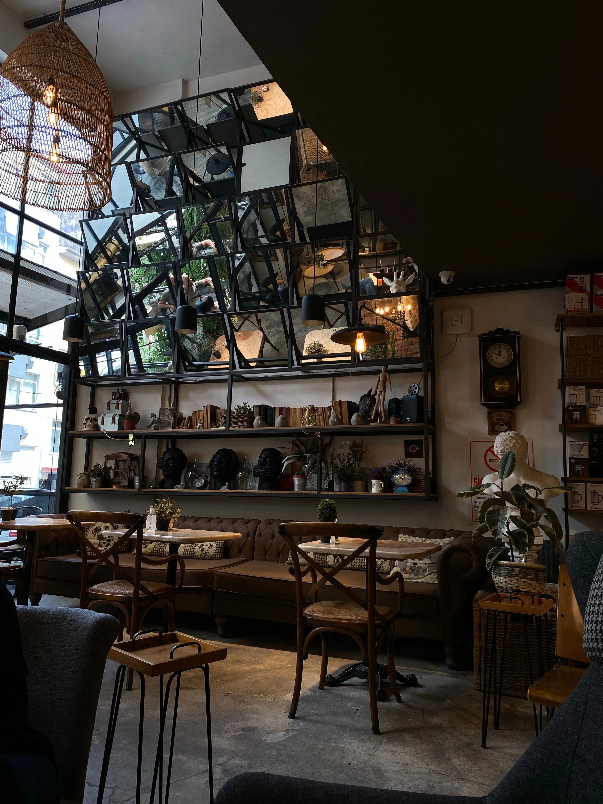
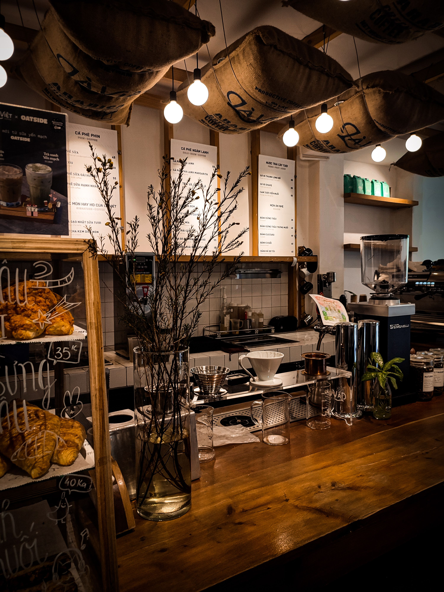

El placer de ir sin prisa
Un espacio pensado para disfrutar los pequeños momentos del día
Descubre nuestra esencia
-
Cafés preparados con cuidado
Cada café se elabora con atención para disfrutar de todo su aroma y sabor.
-
Bebidas frías y refrescantes
Opciones frescas para acompañarte en cualquier momento del día.
-
Desayunos para empezar bien el día
Una forma agradable de comenzar la mañana con algo rico.
-
Dulces para darte un pequeño capricho
Una selección de dulces para disfrutar de esos pequeños placeres.
¿Echamos un vistazo?
Un café para disfrutar sin prisa
Pequeños caprichos dulces

Un espacio para desconectar
El arte de preparar cada café